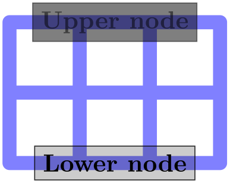
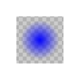
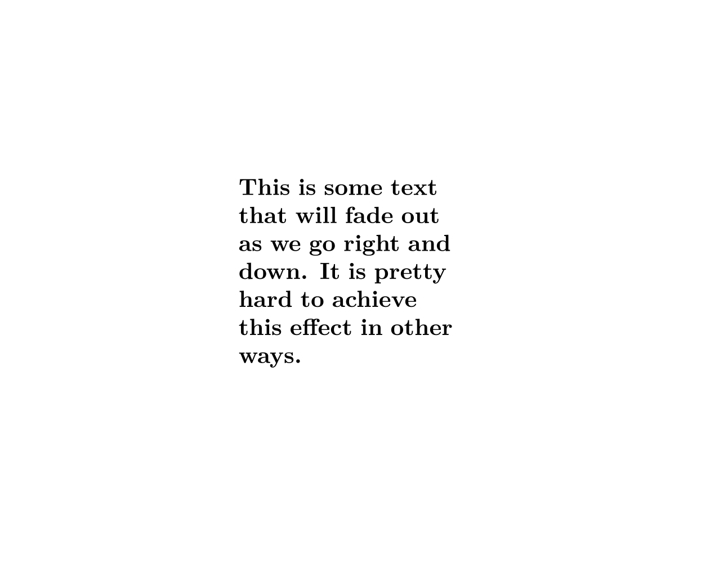

The TikZ and PGF Packages
Manual for version 3.1.10
TikZ
23 Transparency¶
23.1 Overview¶
Normally, when you paint something using any of TikZ’s commands (this includes stroking, filling, shading, patterns, and images), the newly painted objects totally obscure whatever was painted earlier in the same area.
You can change this behavior by using something that can be thought of as “(semi)transparent colors”. Such colors do not completely obscure the background, rather they blend the background with the new color. At first sight, using such semitransparent colors might seem quite straightforward, but the math going on in the background is quite involved and the correct handling of transparency fills some 64 pages in the PDF specification.
In the present section, we start with the different ways of specifying “how transparent” newly drawn objects should be. The simplest way is to just specify a percentage like “60% transparent”. A much more general way is to use something that I call a fading, also known as a soft mask or a mask.
At the end of the section we address the problem of creating so-called transparency groups. This problem arises when you paint over a position several times with a semitransparent color. Sometimes you want the effect to accumulate, sometimes you do not.
Note: Transparency (or Opacity, as it may be called as well) is best supported by the pdfTeX driver. The svg driver also has some support. The PostScript file format does not know about transparency. In dvips-generated PostScript files, transparency of graphic objects is defined through special commands that need further processing to become visible in the pdf output. For this, a recent version of Ghostscript, preferably 9.52 or newer, is required and its command line utility ps2pdf must be called with option -dALLOWPSTRANSPARENCY. Older versions may need option -dNOSAFER instead, but some advanced features, such as transparency groups and fadings, may not work at all. Printers and other programs will typically ignore opacity settings in PostScript files.
23.2 Specifying a Uniform Opacity¶
Specifying a stroke and/or fill opacity is quite easy using the following options.
-
/tikz/draw opacity=⟨value⟩(no default) ¶
This option sets “how transparent” lines should be. A value of 1 means “fully opaque” or “not transparent at all”, a value of 0 means “fully transparent” or “invisible”. A value of 0.5 yields lines that are semitransparent.
Note that when you use PostScript as your output format, this option works only with recent versions of Ghostscript.
\begin{tikzpicture}[line width=1ex]
\draw (0,0) --
(3,1);
\filldraw [fill=yellow!80!black,draw opacity=0.5] (1,0) rectangle
(2,1);
\end{tikzpicture}
Note that the draw opacity options only sets the opacity of drawn lines. The opacity of fillings is set using the option fill opacity (documented in Section 15.5.3. The option opacity sets both at the same time.
-
/tikz/opacity=⟨value⟩(no default) ¶
-
/tikz/transparent(style, no value) ¶
-
/tikz/ultra nearly transparent(style, no value) ¶
-
/tikz/very nearly transparent(style, no value) ¶
-
/tikz/nearly transparent(style, no value) ¶
-
/tikz/semitransparent(style, no value) ¶
-
/tikz/nearly opaque(style, no value) ¶
-
/tikz/very nearly opaque(style, no value) ¶
-
/tikz/ultra nearly opaque(style, no value) ¶
Sets both the drawing and filling opacity to ⟨value⟩.
The following predefined styles make it easier to use this option:
Makes everything totally transparent and, hence, invisible.
Makes everything, well, ultra nearly transparent.
-
/tikz/fill opacity=⟨value⟩(no default) ¶
This option sets the opacity of fillings. In addition to filling operations, this opacity also applies to text and images.
Note, again, that when you use PostScript as your output format, this option works only with recent versions of Ghostscript.
\begin{tikzpicture}[thick,fill opacity=0.5]
\filldraw[fill=red] (0:1cm) circle
(12mm);
\filldraw[fill=green] (120:1cm) circle
(12mm);
\filldraw[fill=blue] (-120:1cm) circle
(12mm);
\end{tikzpicture}
\begin{tikzpicture}
\fill[red] (0,0) rectangle
(3,2);
\node at
(0,0) {\huge A};
\node[fill opacity=0.5] at
(3,2) {\huge B};
\end{tikzpicture}
-
/tikz/text opacity=⟨value⟩(no default) ¶
Sets the opacity of text labels, overriding the fill opacity setting.

\begin{tikzpicture}[every node/.style={fill,draw}]
\draw[line width=2mm,blue!50,line cap=round] (0,0) grid
(3,2);
\node[opacity=0.5] at
(1.5,2) {Upper
node};
\node[draw opacity=0.8,fill opacity=0.2,text opacity=1]
at
(1.5,0) {Lower
node};
\end{tikzpicture}
Note the following effect: If you set up a certain opacity for stroking or filling and you stroke or fill the same area twice, the effect accumulates:

\begin{tikzpicture}[fill opacity=0.5]
\fill[red] (0,0) circle
(1);
\fill[red] (1,0) circle
(1);
\end{tikzpicture}
Often, this is exactly what you intend, but not always. You can use transparency groups, see the end of this section, to change this.
23.3 Blend Modes¶
A blend mode specifies how colors mix when you paint on a canvas. Normally, if you paint a red box on a green circle, the red color will completely replace the green circle. However, in some situations you might also wish the red color to somehow “mix” or “blend” with the green circle. We already saw that, using transparency, we can draw something without completely obscuring the background. Blending is a similar operation, only here we mix colors in more complicated ways.
Note: Blending is a rather “advanced” feature of pdf. Most renderers, let alone printers, will have trouble rendering blending correctly.
-
/tikz/blend mode=⟨mode⟩(no default) ¶
-
/tikz/blend group=⟨mode⟩(no default) ¶
Sets the current blend mode to ⟨mode⟩. Here ⟨mode⟩ must be one of the modes listed below. More details on these modes can also be found in Section 7.2.4 of the pdf Specification, version 1.7.
In the following example, the blend mode is only used and set inside a transparency group (see also Section 23.5). This is because most renderers (viewing programs) have trouble rendering blending correctly otherwise. For instance, at the time of writing, the versions of Adobe’s Reader and Apple’s Preview render the following drawing very differently, if the transparency group is not used in the following example.

Because of the trouble with rendering blending correctly outside transparency groups, there is a special key that establishes a transparency group and sets a blend mode simultaneously:
This key can only be used with a scope (like transparency group). It will cause the current scope to become a transparency group and, inside this group, the blend mode will be set to ⟨mode⟩.
Here is an overview of the effects of the different available blend modes. In the examples, we always have three circles drawn on top of each other (as in the example code earlier): We start with a triple of pure red, green, and blue. Below it, we have a triple of light versions of these three colors (red!50, green!50, and blue!50). Next comes the triple yellow, cyan, and magenta; again with a triple of light versions below it. The large example consists of three balls (produced using ball color) having the colors red, green, and blue, are drawn on top of each other just like the circles.


23.4 Fadings¶
For complicated graphics, uniform transparency settings are not always sufficient. Suppose, for instance, that while you paint a picture, you want the transparency to vary smoothly from completely opaque to completely transparent. This is a “shading-like” transparency. For such a form of transparency I will use the term fading (as a noun). They are also known as soft masks, opacity masks, masks, or soft clips.
23.4.1 Creating Fadings¶
How do we specify a fading? This is a bit of an art since the underlying mechanism is quite powerful, but a bit difficult to use.
Let us start with a bit of terminology. A fading specifies for each point of an area the transparency of that point. This transparency can by any number between 0 and 1. A fading picture is a normal graphic that, in a way to be described in a moment, determines the transparency of points inside the fading. Each fading has an underlying fading picture.
The fading picture is a normal graphic drawn using any of the normal graphic drawing commands. A fading and its fading picture are related as follows: Given any point of the fading, the transparency of this point is determined by the luminosity of the fading picture at the same position. The luminosity of a point determines “how bright” the point is. The brighter the point in the fading picture, the more opaque is the point in the fading. In particular, a white point of the fading picture is completely opaque in the fading and a black point of the fading picture is completely transparent in the fading. (The background of the fading picture is always transparent in the fading as if the background were black.)
It is rather counter-intuitive that a white pixel of the fading picture will be opaque in the fading and a black pixel will be transparent. For this reason, TikZ defines a color called transparent that is the same as black. The nice thing about this definition is that the color transparent!⟨percentage⟩ in the fading picture yields a pixel that is ⟨percentage⟩ percent transparent in the fading.
Turning a fading picture into a normal picture is achieved using the following commands, which are only defined in the library, namely the library fadings. So, to use them, you have to say \usetikzlibrary{fadings} first.
-
\begin{tikzfadingfrompicture}[⟨options⟩] ¶
-
⟨environment contents⟩
-
\end{tikzfadingfrompicture}
-
/tikz/name={⟨name⟩}(no default)
This command works like a {tikzpicture}, only the picture is not shown, but instead a fading is defined based on this picture. To set the name of the picture, use the name option (which is normally used to set the name of a node).
Use this option with the {tikzfadingfrompicture} environment to set the name of the fading. You must provide this option.
The following shading is 2cm by 2cm and gets more and more transparent from left to right, but is 50% transparent for a large circle in the middle.
\usetikzlibrary {fadings,patterns}
\begin{tikzfadingfrompicture}[name=fade right with
circle]
\shade[left color=transparent!0,
right color=transparent!100] (0,0) rectangle
(2,2);
\fill[transparent!50] (1,1) circle
(0.7);
\end{tikzfadingfrompicture}
% Now we use the fading in another picture:
\begin{tikzpicture}
% Background
\fill [black!20] (-1.2,-1.2) rectangle
(1.2,1.2);
\pattern [pattern=checkerboard,pattern color=black!30]
(-1.2,-1.2) rectangle
(1.2,1.2);
\fill [path fading=fade right with
circle,red] (-1,-1) rectangle
(1,1);
\end{tikzpicture}
In the next example we create a fading picture that contains some text. When the fading is used, we only see the shading “through it”.
\usetikzlibrary {fadings,patterns}
\begin{tikzfadingfrompicture}[name=tikz]
\node [text=transparent!20,
font=\fontencoding{T1}\fontfamily{ptm}\fontsize{45}{45}\bfseries]
{Ti\emph{k}Z};
\end{tikzfadingfrompicture}
% Now we use the fading in another picture:
\begin{tikzpicture}
\fill [black!20] (-2,-1) rectangle
(2,1);
\pattern [pattern=checkerboard,pattern color=black!30]
(-2,-1) rectangle
(2,1);
\shade[path fading=tikz,fit fading=false,
left color=blue,right color=black]
(-2,-1) rectangle
(2,1);
\end{tikzpicture}
The same effect can also be achieved using knockout groups, see Section 23.5.
-
\tikzfadingfrompicture[⟨options⟩]
-
⟨environment contents⟩
-
\endtikzfadingfrompicture
The plainTeX version of the environment.
-
\starttikzfadingfrompicture[⟨options⟩]
-
⟨environment contents⟩
-
\stoptikzfadingfrompicture
The ConTeXt version of the environment.
-
\tikzfading[⟨options⟩] ¶
-
1. use the name=⟨name⟩ option to set a name for the fading,
-
2. use the shading option to set the name of the shading that you wish to use,
-
3. extra options for setting the colors of the shading (typically you will set them to the color transparent!⟨percentage⟩).
This command is used to define a fading similarly to the way a shading is defined. In the ⟨options⟩ you should
Then, a new fading named ⟨name⟩ will be created based on the shading.
\usetikzlibrary {fadings,patterns}
\tikzfading[name=fade right,
left color=transparent!0,
right color=transparent!100]
% Now we use the fading in another picture:
\begin{tikzpicture}
% Background
\fill [black!20] (-1.2,-1.2) rectangle
(1.2,1.2);
\path [pattern=checkerboard,pattern color=black!30]
(-1.2,-1.2) rectangle
(1.2,1.2);
\fill [red,path fading=fade right] (-1,-1) rectangle
(1,1);
\end{tikzpicture}

\usetikzlibrary {fadings,patterns}
\tikzfading[name=fade out,
inner color=transparent!0,
outer color=transparent!100]
% Now we use the fading in another picture:
\begin{tikzpicture}
% Background
\fill [black!20] (-1.2,-1.2) rectangle
(1.2,1.2);
\path [pattern=checkerboard,pattern color=black!30]
(-1.2,-1.2) rectangle
(1.2,1.2);
\fill [blue,path fading=fade out] (-1,-1) rectangle
(1,1);
\end{tikzpicture}
23.4.2 Fading a Path¶
A fading specifies for each pixel of a certain area how transparent this pixel will be. The following options are used to install such a fading for the current scope or path.
-
/tikz/path fading=⟨name⟩ (default scope’s setting) ¶
-
/tikz/fit fading=⟨boolean⟩ (default true, initially true) ¶
-
/tikz/fading transform=⟨transformation options⟩(no default) ¶
-
/tikz/fading angle=⟨degree⟩(no default) ¶
This option tells TikZ that the current path should be faded with the fading ⟨name⟩. If no ⟨name⟩ is given, the ⟨name⟩ set for the whole scope is used. Similarly to options like draw or fill, this option is reset for each path, so you have to add it to each path that should be faded. You can also specify none as ⟨name⟩, in which case fading for the path will be switched off in case it has been switched on by previous options or styles.
\usetikzlibrary {fadings,patterns}
\begin{tikzpicture}[path fading=south]
% Checker board
\fill [black!20] (0,0) rectangle
(4,3);
\pattern [pattern=checkerboard,pattern color=black!30]
(0,0) rectangle
(4,3);
\fill [color=blue] (0.5,1.5) rectangle
+(1,1);
\fill [color=blue,path fading=north] (2.5,1.5) rectangle
+(1,1);
\fill [color=red,path fading] (1,0.75) ellipse
(.75 and .5);
\fill [color=red] (3,0.75) ellipse
(.75 and .5);
\end{tikzpicture}
When set to true, the fading is shifted and resized (in exactly the same way as a shading) so that it covers the current path. When set to false, the fading is only shifted so that it is centered on the path’s center, but it is not resized. This can be useful for special-purpose fadings, for instance when you use a fading to “punch out” something.
The ⟨transformation options⟩ are applied to the fading before it is used. For instance, if ⟨transformation options⟩ is set to rotate=90, the fading is rotated by 90 degrees.
\usetikzlibrary {fadings,patterns}
\begin{tikzpicture}[path fading=fade down]
% Checker board
\fill [black!20] (0,0) rectangle
(4,1.5);
\path [pattern=checkerboard,pattern color=black!30] (0,0) rectangle
(4,1.5);
\fill [red,path fading,fading transform={rotate=90}]
(1,0.75) ellipse
(.75 and .5);
\fill [red,path fading,fading transform={rotate=30}]
(3,0.75) ellipse
(.75 and .5);
\end{tikzpicture}
A shortcut for fading transform={rotate=⟨degree⟩}.
Note that you can “fade just about anything”. In particular, you can fade a shading.
\usetikzlibrary {fadings,patterns}
\begin{tikzpicture}
% Checker board
\fill [black!20] (0,0) rectangle
(4,4);
\path [pattern=checkerboard,pattern color=black!30] (0,0) rectangle
(4,4);
\shade [ball color=blue,path fading=south] (2,2) circle
(1.8);
\end{tikzpicture}
The fade inside of the following example is more transparent in the middle than on the outside.
\usetikzlibrary {fadings,patterns}
\tikzfading[name=fade inside,
inner color=transparent!80,
outer color=transparent!30]
\begin{tikzpicture}
% Checker board
\fill [black!20] (0,0) rectangle
(4,4);
\path [pattern=checkerboard,pattern color=black!30] (0,0) rectangle
(4,4);
\shade [ball color=red] (3,3) circle
(0.8);
\shade [ball color=white,path fading=fade inside] (2,2) circle
(1.8);
\end{tikzpicture}
Note that adding the path fading option to a node fades the (background) path, not the text itself. To fade the text, you need to use a scope fading (see below).
Note that using fadings in conjunction with patterns can create visually rather pleasing effects:
\usetikzlibrary {fadings,patterns,shadows}
\tikzfading[name=middle,
top color=transparent!50,
bottom color=transparent!50,
middle color=transparent!20]
\begin{tikzpicture}
\node [circle,circular drop shadow,
pattern=horizontal lines
dark blue,
path fading=south,
minimum size=3.6cm] {};
\pattern [path fading=north,
pattern=horizontal lines
dark gray]
(0,0) circle
(1.8cm);
\pattern [path fading=middle,
pattern=crosshatch dots light steel blue]
(0,0) circle
(1.8cm);
\end{tikzpicture}
23.4.3 Fading a Scope¶
In addition to fading individual paths, you may also wish to “fade a scope”, that is, you may wish to install a fading that is used globally to specify the transparency for all objects drawn inside a scope. This effect can also be thought of as a “soft clip” and it works in a similar way: You add the scope fading option to a path in a scope – typically the first one – and then all subsequent drawings in the scope are faded. You will use a transparency group in conjunction, see the end of this section.
-
/tikz/scope fading=⟨fading⟩(no default) ¶
In principle, this key works in exactly the same way as the path fading key. The only difference is, that the effect of the fading will persist after the current path till the end of the scope. Thus, the ⟨fading⟩ is applied to all subsequent drawings in the current scope, not just to the current path. In this regard, the option works very much like the clip option. (Note, however, that, unlike the clip option, fadings to not accumulate unless a transparency group is used.)
The keys fit fading and fading transform have the same effect as for path fading. Also that, just as for path fading, providing the scope fading option with a {scope} only sets the name of the fading to be used. You have to explicitly provide the scope fading with a path to actually install a fading.
\usetikzlibrary {fadings,patterns}
\begin{tikzpicture}
\fill [black!20] (-2,-2) rectangle
(2,2);
\pattern [pattern=checkerboard,pattern color=black!30]
(-2,-2) rectangle
(2,2);
% The bounding box of the shading:
\draw [red] (-50bp,-50bp) rectangle
(50bp,50bp);
\path [scope fading=south,fit fading=false] (0,0);
% fading is centered at its natural size
\fill[red] ( 90:1) circle
(1);
\fill[green] (210:1) circle
(1);
\fill[blue] (330:1) circle
(1);
\end{tikzpicture}
In the following example we resize the fading to the size of the whole picture:
\usetikzlibrary {fadings,patterns}
\begin{tikzpicture}
\fill [black!20] (-2,-2) rectangle
(2,2);
\pattern [pattern=checkerboard,pattern color=black!30]
(-2,-2) rectangle
(2,2);
\path [scope fading=south] (-2,-2) rectangle
(2,2);
\fill[red] ( 90:1) circle
(1);
\fill[green] (210:1) circle
(1);
\fill[blue] (330:1) circle
(1);
\end{tikzpicture}
Scope fadings are also needed if you wish to fade a node.

\usetikzlibrary {fadings}
\tikz \node [scope fading=south,fading angle=45,text width=3.5cm]
{
This
is
some
text
that
will
fade
out
as
we
go
right
and
down. It
is
pretty
hard
to
achieve
this
effect
in
other
ways.
};
23.5 Transparency Groups¶
Consider the following cross and sign. They “look wrong” because we can see how they were constructed, while this is not really part of the desired effect.
\begin{tikzpicture}[opacity=.5]
\draw [line width=5mm] (0,0) --
(2,2);
\draw [line width=5mm] (2,0) --
(0,2);
\end{tikzpicture}
\usetikzlibrary {shapes.symbols}
\begin{tikzpicture}
\node at
(0,0) [forbidden sign,line width=2ex,draw=red,fill=white] {Smoking};
\node [opacity=.5]
at
(2,0) [forbidden sign,line width=2ex,draw=red,fill=white] {Smoking};
\end{tikzpicture}
Transparency groups are used to render them correctly:
\begin{tikzpicture}[opacity=.5]
\begin{scope}[transparency group]
\draw [line width=5mm] (0,0) --
(2,2);
\draw [line width=5mm] (2,0) --
(0,2);
\end{scope}
\end{tikzpicture}
\usetikzlibrary {shapes.symbols}
\begin{tikzpicture}
\node at
(0,0) [forbidden sign,line width=2ex,draw=red,fill=white] {Smoking};
\begin{scope}[opacity=.5,transparency group]
\node at
(2,0) [forbidden sign,line width=2ex,draw=red,fill=white]
{Smoking};
\end{scope}
\end{tikzpicture}
-
/tikz/transparency group=[⟨options⟩](no default) ¶
-
• knockout When this option is given inside the ⟨options⟩, the group becomes a so-called knockout group. This means, essentially, that inside the group everything is painted as if the “opacity” of a line or area were just another color channel. In particular, if you paint a pixel with opacity \(0\) inside a knockout group, this pixel becomes perfectly transparent immediately. In contrast, painting a pixel with something of opacity \(0\) normally has no effect.
Not all renderers, let alone printers, will support this. At the time of writing, Apple’s Preview will not show the following correctly (you should see the text TikZ in the middle):
\begin{tikzpicture}
\shade [left color=red,right color=blue] (-2,-1) rectangle (2,1);
\begin{scope}[transparency group=knockout]
\fill [white] (-1.9,-.9) rectangle (1.9,.9);
\node [opacity=0,
font=\fontencoding{T1}\fontfamily{ptm}\fontsize{45}{45}\bfseries]
{Ti\emph{k}Z};
\end{scope}
\end{tikzpicture}
In the example, we first draw a large shading and then, inside the transparency group “overwrite” most of this shading by a big white rectangle. The interesting part is the text of the node, which has opacity 0. Normally, this would mean that nothing is shown. However, in a knockout group, we “paint” the text with an “opacity zero” color. The effect is that part of the totally opaque white rectangle gets overwritten by a perfectly transparent area (namely exactly the area taken up by the pixels of the text). When this whole knockout group is then placed on top of the shading, the shading will “shine through” at the knocked-out pixels.
-
• isolated=false A group can be isolated or not. By default, they are isolated, since this is typically what you want. For details on what isolated groups are, exactly, see Section 7.3.4 of the pdf Specification, version 1.7.
This option can be given to a scope. It will have the following effect: The scope’s contents is stroked / filled “ignoring any outside transparency”. This means, all previous transparency settings are ignored (you can still set transparency inside the group, but never mind). For instance, in the forbidden sign example, the whole sign is first painted (conceptually) like the image on the left hand side. Note that some pixels of the sign are painted multiple times (up to three times), but only the last color “wins”.
Then, when the scope is finished, it is painted as a whole. The fill transparency settings are now applied to the resulting picture. For instance, the pixel that has been painted three times is just red at the end, so this red color will be blended with whatever is “behind” the group on the page.
\usetikzlibrary {patterns,shapes.symbols}
\begin{tikzpicture}
\pattern[pattern=checkerboard,pattern color=black!15](-1,-1) rectangle
(3,1);
\node at
(0,0) [forbidden sign,line width=2ex,draw=red,fill=white] {Smoking};
\begin{scope}[transparency group,opacity=.5]
\node at
(2,0) [forbidden sign,line width=2ex,draw=red,fill=white]
{Smoking};
\end{scope}
\end{tikzpicture}
Note that in the example, the opacity=.5 is not active inside the transparency group: The group is only established at beginning of the scope and all options given to the {scope} environment are set before the group is established. To change the opacity inside the group, you need to open another scope inside it or use the opacity key with a command inside the group:
\usetikzlibrary {patterns,shapes.symbols}
\begin{tikzpicture}
\pattern[pattern=checkerboard,pattern color=black!15](-1,-1) rectangle
(3,1);
\node at
(0,0) [forbidden sign,line width=2ex,draw=red,fill=white] {Smoking};
\begin{scope}[transparency group,opacity=.5]
\node (s) at
(2,0) [forbidden sign,line width=2ex,draw=red,fill=white]
{Smoking};
\draw [opacity=.5, line width=2ex, blue] (1.2,0) --
(2.8,0);
\end{scope}
\end{tikzpicture}
The ⟨options⟩ are a list of comma-separated options:
Note that when a transparency group is created, TikZ must correctly determine the size of the material inside the group. Usually, this is no problem, but when you use things like overlay or transform canvas, trouble may result. In this case, please consult Section 115 on how to sidestep this problem in such cases.